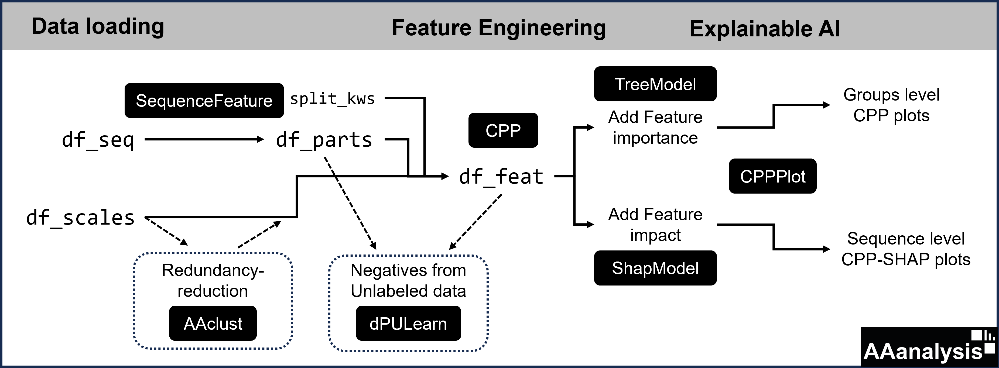

Data Flow and Enry Points
Data Flow: Components of AAanalysis
The AAanalysis toolkit uses different DataFrames. It starts with DataFrames containing amino acid scales information (df_scales, df_cat) or protein sequence information (df_seq). Sequences can be segmented into sequence parts (df_parts), which can be split, as defined by split_kws. Amino acid scales and sequence parts together with split settings are the input for the CPP algorithm, creating various physicochemical features (df_feat) by comparing two sets of protein sequences.
See the primary data flow within the AAanalysis toolkit in this diagram:
